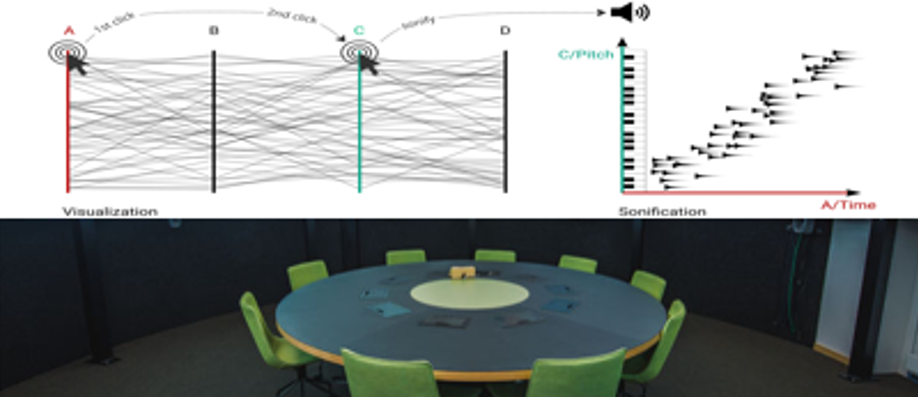

Parallel Chords: an audio-visual analytics design for parallel coordinates

*contributed equally
Venue. PUC (2024)
Materials.
DOI
PDF [link]
Abstract. One of the commonly used visualization techniques for multivariate data is the parallel coordinates plot. It provides users with a visual overview of multivariate data and the possibility to interactively explore it. While pattern recognition is a strength of the human visual system, it is also a strength of the auditory system. Inspired by the integration of the visual and auditory perception in everyday life, we introduce an audio-visual analytics design named Parallel Chords combining both visual and auditory displays. Parallel Chords lets users explore multivariate data using both visualization and sonification through the interaction with the axes of a parallel coordinates plot. To illustrate the potential of the design, we present (1) prototypical data patterns where the sonification helps with the identification of correlations, clusters, and outliers, (2) a usage scenario showing the sonification of data from non-adjacent axes, and (3) a controlled experiment on the sensitivity thresholds of participants when distinguishing the strength of correlations. During this controlled experiment, 35 participants used three different display types, the visualization, the sonification, and the combination of these, to identify the strongest out of three correlations. The results show that all three display types enabled the participants to identify the strongest correlation — with visualization resulting in the best sensitivity. The sonification resulted in sensitivities that were independent from the type of displayed correlation, and the combination resulted in increased enjoyability during usage.
Link to this page: